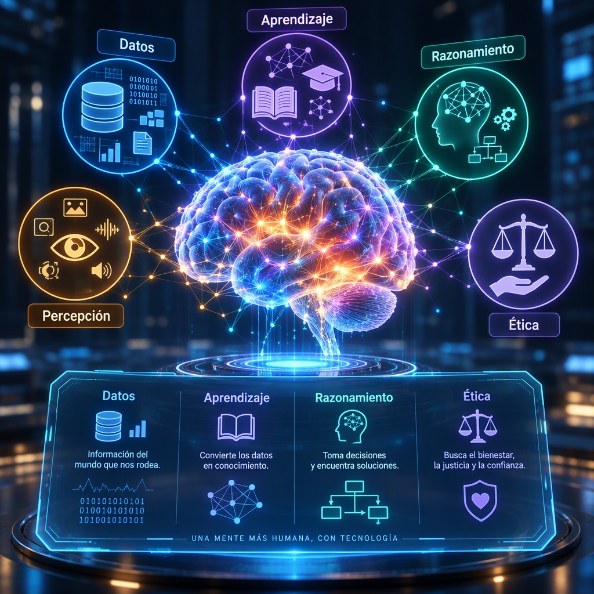
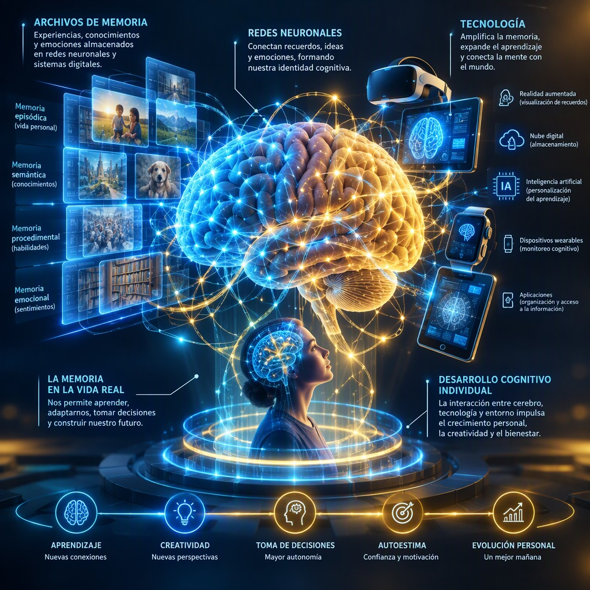
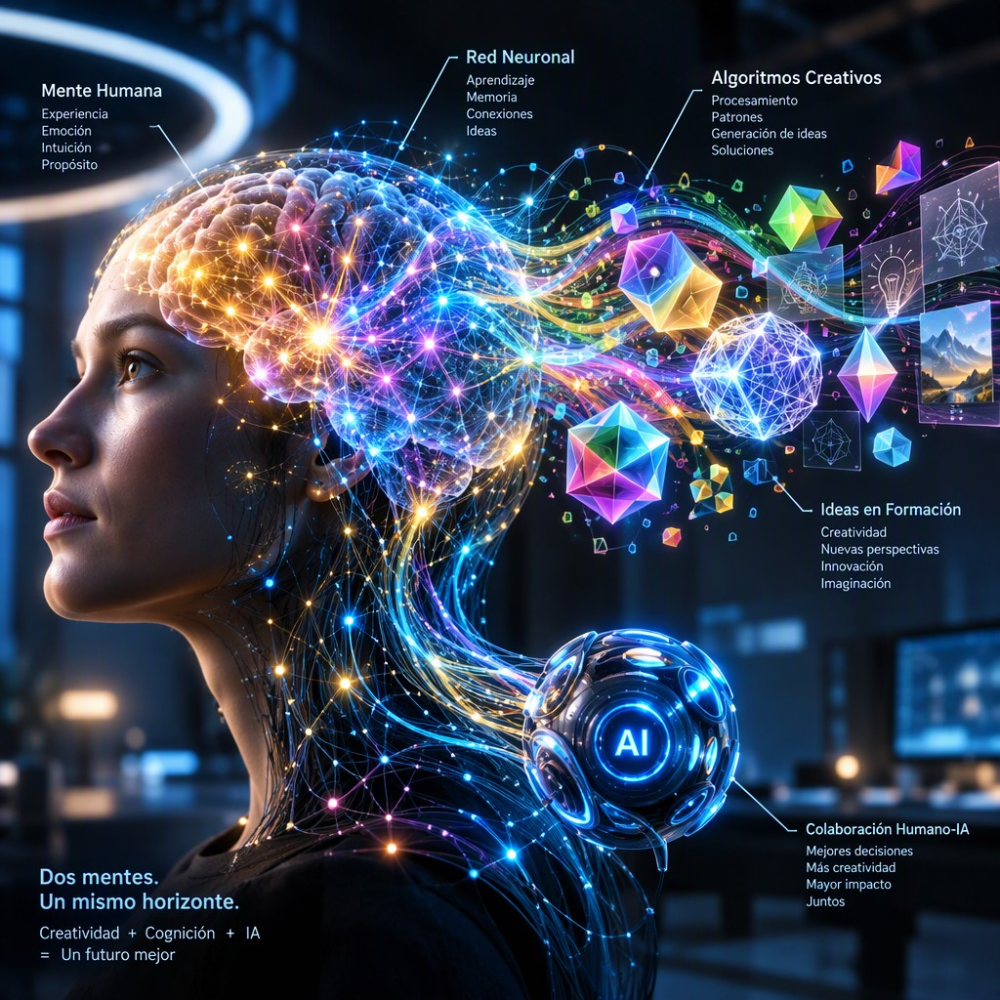

Título de la obra:
La IA y el desarrollo cognitivo del individuo
Autores:
Alejandra Cristina Moncada
Wilfer León Arias Loaiza
Código JavaScript para el libro: Joel Espinosa Longi, IMATE, UNAM.
Recursos interactivos: DescartesJS, WebSim, Phet Colorado, GeoGebra, ...
Fuentes: Lato y UbuntuMono
Imagen de portada: ilustración generada por Ideogram AI
Red Educativa Digital Descartes
Córdoba (España)
descartes@proyectodescartes.org
https://proyectodescartes.org
Proyecto iCartesiLibri
https://proyectodescartes.org/iCartesiLibri/index.htm
ISBN:

Esta obra está bajo una licencia Creative Commons 4.0 internacional: Reconocimiento-No Comercial-Compartir Igual.
Este libro nace de una pregunta central: ¿cómo puede la inteligencia artificial contribuir al desarrollo cognitivo sin reemplazar la actividad mental, la autonomía ni el juicio de las personas? La respuesta que propone no presenta la IA como una autoridad ni como una solución automática, sino como una herramienta de apoyo, un objeto de análisis y, en determinadas condiciones, un andamio para aprender. Su propósito es explorar las relaciones entre estas tecnologías y capacidades como la atención, la memoria, el lenguaje, el razonamiento, la creatividad, la metacognición, la autorregulación y el pensamiento crítico.
El enfoque de la obra parte de una idea constante: los beneficios de la IA dependen de la forma en que se utiliza. Los sistemas generativos pueden explicar conceptos, adaptar actividades, formular preguntas, ofrecer retroalimentación, proponer alternativas y facilitar la práctica; sin embargo, también pueden producir errores, sesgos, información inventada o respuestas convincentes sin fundamento suficiente. Por ello, el libro invita a comprender su funcionamiento y, al mismo tiempo, a conservar activa la participación del estudiante: preguntar, contrastar, verificar, reformular, justificar y elaborar conclusiones propias. La tecnología puede ampliar las oportunidades de aprendizaje, pero no garantiza por sí misma una comprensión profunda.
La organización sigue un recorrido que va de los conceptos esenciales de la inteligencia artificial y su relación con las mentes en la era digital hacia las etapas del desarrollo humano y los procesos vinculados con el cerebro y el aprendizaje. A partir de allí, la mirada se concentra en la atención y la memoria, en las posibilidades y límites de la creatividad algorítmica y en las condiciones necesarias para fortalecer el pensamiento crítico. Este trayecto conduce a una reflexión ética
sobre la autonomía, la privacidad, la equidad, la transparencia y la responsabilidad, y culmina en la propuesta de una inteligencia híbrida basada en la complementariedad entre las capacidades humanas y los sistemas artificiales.
Recorrer estas páginas supone observar la IA desde una doble perspectiva. Por un lado, como recurso para personalizar explicaciones, generar ejercicios, simular conversaciones, comparar argumentos, organizar información y acompañar distintos ritmos de aprendizaje. Por otro, como una presencia que puede favorecer la dependencia, reducir el esfuerzo de recuperación, homogeneizar las ideas o desplazar la toma de decisiones. En consecuencia, la obra concede especial importancia a la supervisión humana, la verificación de fuentes, la protección de los datos personales y la evaluación del proceso de razonamiento, no únicamente del resultado final.
Con transparencia, se deja constancia de que tanto los textos como las imágenes de esta obra fueron generados con ayuda de inteligencia artificial. Esta circunstancia forma parte del propio tema del libro y reclama una lectura atenta, crítica y reflexiva. La invitación es a avanzar por sus páginas preguntándose no solo qué puede hacer la IA, sino qué conviene delegarle, qué debe conservar la persona y cómo diseñar interacciones que fortalezcan, en lugar de sustituir, la capacidad de pensar por sí misma.
La inteligencia artificial (IA) aplicada al desarrollo cognitivo se refiere al uso de sistemas capaces de analizar información, reconocer patrones, generar textos, ofrecer retroalimentación y adaptar actividades de aprendizaje. En particular, la IA generativa funciona mediante modelos entrenados con grandes volúmenes de datos que producen respuestas probables a partir de las instrucciones del usuario. Sin embargo, no comprende ni razona exactamente como una persona: genera resultados estadísticamente plausibles que deben ser interpretados y verificados. Kasneci et al. (2023) señalan que estos sistemas pueden apoyar la explicación de conceptos, la personalización del aprendizaje y la creación de materiales, aunque también pueden producir errores, sesgos o información inventada.
En el desarrollo cognitivo intervienen varios componentes principales: atención, memoria, lenguaje, razonamiento, pensamiento crítico, metacognición y autorregulación.
La IA puede actuar como una herramienta de apoyo en cada uno de ellos, pero sus efectos dependen de la forma en que se utilice. Entre sus aplicaciones prácticas se encuentran:
Lo et al. (2023) sostiene que estas posibilidades pueden aumentar la motivación y facilitar el acceso a explicaciones individualizadas, especialmente cuando el estudiante recibe orientación para formular preguntas, contrastar respuestas y corregir sus propios errores. En este sentido, la IA no debería sustituir la actividad mental, sino ampliar las oportunidades para practicarla.
El principio de funcionamiento cognitivo más importante consiste en establecer un ciclo entre la persona y la herramienta: el estudiante plantea una pregunta, recibe una respuesta, evalúa su calidad, la contrasta con otras fuentes y reformula su comprensión. Este proceso favorece la metacognición, porque obliga a preguntarse qué se sabe, qué falta por comprender y qué evidencias respaldan una conclusión.
Por ejemplo, ante una explicación generada por IA sobre el cambio climático, el estudiante puede identificar sus afirmaciones principales, verificar los datos en fuentes científicas y redactar una versión propia. Tlili et al. (2023) advierten que el valor educativo de los chatbots depende precisamente de que se integren en actividades de diálogo, análisis y producción personal, y no únicamente en la obtención rápida de respuestas.
Entre los beneficios y ventajas se encuentran la disponibilidad permanente de apoyo, la adaptación del lenguaje, la reducción del tiempo necesario para elaborar materiales y la posibilidad de recibir múltiples ejemplos. También puede favorecer la inclusión cuando ofrece lectores de texto, traducción, simplificación lingüística o apoyos para estudiantes con diferentes necesidades. No obstante, existen desafíos y limitaciones: dependencia excesiva, disminución del esfuerzo de recuperación de información, plagio, respuestas incorrectas, sesgos culturales y desigualdad en el acceso. UNESCO (2023) recomienda que el uso educativo de la IA preserve la autonomía humana, la privacidad, la supervisión docente y la evaluación crítica de los resultados.
Un caso ilustrativo es el de un estudiante que utiliza un asistente de IA para preparar un ensayo. Si copia directamente la respuesta, la herramienta puede limitar el desarrollo de la escritura y del razonamiento. Si, en cambio, solicita un esquema, compara dos interpretaciones, identifica errores y redacta una conclusión propia, la IA se convierte en un andamio cognitivo. Por ello, el criterio central no es utilizar o rechazar la tecnología, sino diseñar tareas que exijan argumentar, crear, verificar y explicar. Como concluye Kasneci et al. (2023), el potencial de la IA educativa se alcanza cuando complementa la interacción humana y el juicio del aprendiz, en lugar de reemplazarlos.

La inteligencia artificial (IA) es un conjunto de métodos computacionales capaces de realizar tareas que normalmente requieren capacidades humanas, como reconocer patrones, comprender lenguaje, generar contenidos, clasificar información o apoyar la toma de decisiones. En el ámbito del desarrollo cognitivo, su importancia no reside únicamente en que “piense” o responda, sino en que puede convertirse en un mediador para la atención, la memoria, el razonamiento y la metacognición. La IA generativa, representada por modelos de lenguaje como ChatGPT, produce texto mediante el análisis de grandes volúmenes de datos y la estimación de la secuencia más probable de unidades lingüísticas. Bubeck et al. (2023) observaron que modelos avanzados como GPT-4 podían resolver tareas diversas de razonamiento, programación y comprensión, aunque esto no implica que posean conciencia ni comprensión humana.
Sus componentes principales incluyen los datos de entrenamiento, los algoritmos, las redes neuronales, la capacidad computacional y la interfaz mediante la cual interactúa el usuario. En los modelos de lenguaje, el proceso suele comenzar con la división del texto en unidades o tokens; posteriormente, estas se representan numéricamente y se procesan mediante mecanismos de atención que permiten relacionar
unas partes del contexto con otras. Finalmente, el sistema genera una respuesta seleccionando progresivamente nuevos tokens. Este funcionamiento explica tanto su fluidez como sus limitaciones: el modelo puede producir una respuesta gramaticalmente convincente sin garantizar que sea verdadera. Kasneci et al. (2023) destacan que esta característica ofrece oportunidades educativas, pero exige supervisión, verificación de fuentes y actividades que mantengan al estudiante intelectualmente activo.
La IA puede emplearse para personalizar explicaciones, proporcionar retroalimentación inmediata, proponer preguntas socráticas, simular conversaciones y apoyar la planificación del estudio. Sus beneficios potenciales abarcan la adaptación del nivel de dificultad, el acceso a múltiples ejemplos y la ayuda a estudiantes que necesitan practicar a su propio ritmo. Sin embargo, el beneficio depende del tipo de interacción: copiar una respuesta puede reducir la elaboración mental, mientras que comparar una respuesta generada con evidencias, detectar errores y justificar una corrección puede fortalecer el pensamiento crítico y la metacognición. Por ello, una estrategia pedagógica adecuada consiste en solicitar al estudiante que formule primero una hipótesis, use la IA como interlocutora y después evalúe críticamente el resultado.
La revisión de oportunidades y riesgos educativos realizada por
Kasneci et al. (2023) respalda este uso orientado al aprendizaje activo, no a la sustitución del esfuerzo cognitivo.
Entre sus desafíos y limitaciones se encuentran las llamadas alucinaciones —respuestas plausibles pero incorrectas—, los sesgos presentes en los datos, la
protección insuficiente de información personal, la dependencia tecnológica y la posible disminución de la autonomía intelectual. Tlili et al. (2023), al analizar ChatGPT como caso de estudio en educación, señalan la necesidad de establecer normas de uso, formar a docentes y estudiantes y revisar las formas tradicionales de evaluación. En consecuencia, el uso responsable debe incluir: verificación de información, declaración del apoyo recibido de la IA, protección de datos personales y evaluación del razonamiento propio, no solo del producto final. La IA debe funcionar como herramienta de apoyo y objeto de análisis, no como autoridad incuestionable.
Un caso práctico puede desarrollarse en una clase de ciencias: el estudiante pide a una IA tres explicaciones de un fenómeno, identifica posibles errores, contrasta las respuestas con un libro académico y redacta una conclusión propia. En este proceso intervienen la comprensión, la comparación, la argumentación y la autorregulación. La UNESCO (2023) recomienda precisamente un enfoque centrado en la persona, con atención a la privacidad, la inclusión, la equidad y la responsabilidad educativa. Así, los conceptos esenciales de la IA no deben enseñarse solo como contenidos técnicos; también deben relacionarse con la pregunta fundamental de cómo conservar y ampliar las capacidades cognitivas humanas cuando se interactúa con sistemas capaces de generar información de manera rápida y convincente.
El desarrollo humano es un proceso dinámico mediante el cual cambian las capacidades cognitivas, socioemocionales, lingüísticas y autorregulatorias desde la infancia hasta la vejez. En el contexto de la inteligencia artificial (IA), no debe entenderse que la tecnología sustituye las etapas evolutivas ni que produce automáticamente un mayor desarrollo cognitivo; más bien, actúa como un mediador del aprendizaje, capaz de ofrecer explicaciones, retroalimentación y oportunidades de práctica adaptadas a las necesidades de cada persona.
Los modelos generativos pueden apoyar la personalización educativa, aunque sus respuestas deben ser supervisadas porque pueden contener errores, sesgos o información inventada (Kasneci et al., 2023; Lo, 2023).
Las principales etapas evolutivas pueden organizarse de manera orientativa —sin considerarlas rígidas ni idénticas para todas las culturas— en las siguientes:
El principio de funcionamiento de la IA aplicada al desarrollo cognitivo consiste en analizar una entrada —por ejemplo, una respuesta, una pregunta o un patrón de desempeño— y generar una salida adaptada, como una pista, una explicación o una nueva actividad. Sus componentes principales son los datos, los algoritmos, la interfaz, el usuario y la mediación pedagógica. En los procesos internos de aprendizaje, la persona interpreta la respuesta de la IA, la contrasta con sus conocimientos previos y reorganiza sus estrategias. Por ello, la interacción más beneficiosa no es la que entrega directamente una solución, sino la que promueve preguntas, justificaciones y revisión crítica. La literatura reciente identifica como ventajas la personalización, la disponibilidad permanente y la retroalimentación rápida, pero también advierte riesgos relacionados con la dependencia, la privacidad, la desigualdad de acceso y la pérdida de oportunidades para practicar el razonamiento autónomo (Tlili et al., 2023; Lo, 2023).
En términos de aplicaciones prácticas, una familia puede emplear un asistente conversacional para crear preguntas de comprensión lectora; un docente puede solicitar varias explicaciones de un mismo concepto para atender distintos niveles; y un adulto mayor puede utilizar una interfaz de voz para organizar actividades o acceder a información. Sin embargo, estos usos deben incorporar desafíos y limitaciones: supervisión humana, protección de datos, adecuación a la edad, revisión de sesgos y comprobación de la exactitud de las respuestas. La UNESCO (2023) recomienda una implementación
centrada en las personas, con criterios de seguridad, inclusión y responsabilidad. En consecuencia, la IA puede ampliar las oportunidades de desarrollo cognitivo a lo largo de la vida, pero sus beneficios dependerán de la calidad del entorno educativo, de la participación activa del individuo y de la orientación ética de adultos, docentes y profesionales.
El cerebro y el aprendizaje forman un sistema dinámico en el que la atención, la memoria de trabajo, la motivación y la recuperación activa de la información interactúan para construir conocimientos duraderos. En este contexto, la inteligencia artificial (IA) puede entenderse como una herramienta de apoyo cognitivo que analiza datos, genera explicaciones, adapta actividades y proporciona retroalimentación. Sin embargo, la IA no “aprende por el estudiante”: su efecto depende de cómo se integre en las actividades mentales del individuo. Kasneci et al. (2023) señalan que los modelos de lenguaje pueden favorecer experiencias educativas personalizadas, aunque también plantean riesgos relacionados con la exactitud de la información, la autonomía y la evaluación del aprendizaje.
Los componentes principales de esta relación son: atención, para seleccionar la información relevante; memoria de trabajo, para
manipular temporalmente los contenidos; memoria a largo plazo, para consolidar conocimientos; metacognición, para supervisar cómo se aprende; y motivación, para sostener el esfuerzo. La IA puede intervenir en cada componente mediante tutores conversacionales, sistemas de recomendación, simulaciones y herramientas de retroalimentación. Su principio de funcionamiento consiste en adaptar la respuesta al desempeño observable del estudiante: identifica errores, propone ejemplos graduales y ajusta la dificultad. No obstante, una respuesta inmediata no garantiza aprendizaje profundo; para que exista desarrollo cognitivo, el estudiante debe explicar, comparar, recuperar y aplicar la información. Tlili et al. (2023) destacan que los chatbots educativos pueden facilitar la interacción y el acompañamiento, pero requieren supervisión pedagógica y criterios claros de uso.
Entre los procesos internos favorecidos por una integración adecuada se encuentran la elaboración de conceptos, la práctica distribuida, la resolución de problemas y la autorregulación. Por ejemplo, un estudiante puede solicitar a una IA que formule preguntas socráticas sobre un texto, que presente un problema con dificultad progresiva o que revise la lógica de una respuesta sin proporcionar directamente la solución. En este caso, la herramienta funciona como andamiaje: apoya temporalmente la actividad cognitiva y puede retirarse gradualmente cuando aumenta la competencia. En las aplicaciones prácticas, la IA se utiliza para crear mapas conceptuales, adaptar lecturas, simular laboratorios, generar ejercicios y ofrecer retroalimentación lingüística. Además, Noy y Zhang (2023) encontraron que las herramientas generativas pueden mejorar el rendimiento y reducir el tiempo en determinadas tareas profesionales; sin embargo, ese resultado no debe interpretarse automáticamente como evidencia de aprendizaje, pues producir un resultado con mayor rapidez no equivale a comprenderlo.
Los beneficios y ventajas potenciales incluyen la personalización del ritmo, el acceso inmediato a ejemplos, la detección temprana de dificultades y el apoyo a estudiantes con distintas necesidades. También puede ampliar las oportunidades de práctica fuera del aula y ayudar al docente a identificar patrones de error. Un caso realista sería el de una plataforma que detecta que un alumno confunde causa y consecuencia en un texto histórico y le propone una secuencia de actividades: identificar hechos, ordenarlos temporalmente, justificar relaciones y redactar una explicación propia. En este proceso, la IA no sustituye la actividad intelectual, sino que organiza oportunidades para ejercitarla.
Los desafíos o limitaciones son igualmente importantes: respuestas incorrectas o sesgadas, dependencia excesiva, reducción del esfuerzo mental, problemas de privacidad y desigualdad en el acceso. Si el estudiante delega en la IA la lectura, la escritura o la resolución de problemas, puede producirse una participación cognitiva superficial.
La UNESCO (2023) recomienda establecer un uso centrado en la persona, con protección de datos, supervisión humana y objetivos pedagógicos explícitos.
Una estrategia responsable consiste en exigir que toda respuesta generada por IA sea contrastada con fuentes confiables, explicada con palabras propias y revisada mediante preguntas como: ¿qué comprendí?, ¿qué evidencia lo respalda?, ¿qué parte podría ser incorrecta? Así, el objetivo no es usar más IA, sino utilizarla de manera que fortalezca la atención, la comprensión, la memoria y la autonomía intelectual.
La atención bajo influencia describe la manera en que los sistemas de inteligencia artificial pueden orientar, fragmentar, ampliar o sustituir parcialmente la atención del individuo. En este contexto, la atención no depende únicamente de la voluntad: también está condicionada por notificaciones, recomendaciones algorítmicas, respuestas instantáneas y contenidos personalizados. En los sistemas generativos, el usuario introduce una instrucción, el modelo procesa patrones lingüísticos y produce una respuesta que compite por convertirse en el centro de la actividad mental. Kasneci et al. (2023) señalan que estas herramientas pueden apoyar la explicación, la retroalimentación y la personalización del aprendizaje, aunque también pueden fomentar una recepción pasiva de la información.
Sus componentes principales son el foco atencional, la memoria de trabajo, la motivación, la interfaz digital y el grado de autonomía concedido a la IA. El principio de funcionamiento puede resumirse así: cuanto menor es el esfuerzo requerido para obtener una respuesta, mayor es la posibilidad de que la persona reduzca la búsqueda, la comparación y la comprobación independiente. Este fenómeno se relaciona con la descarga cognitiva, es decir, la delegación de una tarea mental en una herramienta externa.
Gerlich (2025) encontró una asociación entre un uso más frecuente de herramientas de IA y una mayor tendencia a delegar procesos cognitivos, junto con una relación negativa entre esa dependencia y el pensamiento crítico; no obstante, estos resultados deben interpretarse con cautela porque no demuestran por sí solos una relación causal universal.
Los procesos internos implicados pueden organizarse en una secuencia:
1. Captura: la interfaz atrae la atención mediante respuestas inmediatas, sugerencias o estímulos personalizados.
2. Selección: el usuario decide qué información aceptar, ignorar o ampliar.
3. Delegación: algunas operaciones —resumir, recordar, redactar o comparar— se trasladan al sistema.
4. Supervisión: la persona verifica la exactitud, la pertinencia y los posibles sesgos de la respuesta.
5. Integración: la información validada se incorpora a la memoria y al razonamiento propio.
En las aplicaciones prácticas, la IA puede ayudar a dividir una tarea compleja en pasos, generar preguntas de estudio, ofrecer ejemplos alternativos o adaptar la dificultad de un ejercicio. También puede funcionar como un tutor socrático si se le solicita que formule preguntas en lugar de entregar soluciones. Sus principales beneficios aparecen cuando amplía la atención sin reemplazarla: reduce tareas repetitivas, facilita la accesibilidad y proporciona retroalimentación rápida.
Para favorecer ese uso, conviene aplicar una regla sencilla: primero elaborar una respuesta personal, después consultar a la IA y finalmente comparar, corregir y justificar las diferencias.
El principal desafío consiste en confundir fluidez con comprensión. Una respuesta clara y convincente puede contener errores, sesgos o información inventada; además, la facilidad de obtenerla puede disminuir la tolerancia a la incertidumbre y la disposición a concentrarse en problemas difíciles. Por ello, la UNESCO recomienda establecer criterios de uso responsable, protección de datos, supervisión humana y formación en alfabetización digital (Miao & Holmes, 2023). Un caso real de uso educativo sería pedir a una IA que evalúe un borrador: la actividad es formativa si el estudiante conserva el control, revisa los argumentos y explica los cambios; se vuelve perjudicial si acepta automáticamente la versión generada y deja de construir su propio razonamiento. La atención bajo influencia, por tanto, no exige rechazar la IA, sino diseñar interacciones que mantengan activa la observación, la memoria, la duda y la toma de decisiones.
La memoria y la tecnología se relacionan mediante un proceso denominado descarga cognitiva: el individuo utiliza dispositivos externos para almacenar, recuperar o transformar información que, en otras circunstancias, tendría que mantener mentalmente. En este proceso intervienen varios componentes principales: la memoria de trabajo, encargada de manipular información durante una tarea; la memoria a largo plazo, donde se consolidan conocimientos; los dispositivos digitales, que funcionan como depósitos externos; y los sistemas de inteligencia artificial, capaces de organizar, resumir y recuperar contenidos. Kasneci et al. (2023) señalan que los modelos de lenguaje pueden apoyar la explicación y personalización del aprendizaje, aunque
su utilidad depende de que el estudiante conserve una participación activa en la construcción del conocimiento.

El principio de funcionamiento consiste en trasladar parte de una tarea mental a una herramienta tecnológica. Por ejemplo, una persona
puede consultar una aplicación para recordar una fecha, utilizar un buscador para localizar un concepto o pedir a una IA generativa que sintetice un texto. Los procesos internos incluyen la codificación inicial de la información, la decisión de qué conservar externamente, la recuperación mediante una consulta y la posible integración del resultado con los conocimientos previos. Cuando la herramienta proporciona una respuesta sin exigir razonamiento, puede reducir el esfuerzo de elaboración y limitar la consolidación de recuerdos; cuando formula preguntas, ofrece retroalimentación o solicita justificar una respuesta, puede estimular la comprensión. Gerlich (2025) relaciona el uso intensivo de herramientas de IA con la descarga cognitiva y advierte que una dependencia excesiva puede debilitar la práctica del pensamiento crítico.
Entre sus aplicaciones prácticas, la IA puede crear tarjetas de estudio, adaptar ejercicios al nivel del estudiante, generar simulaciones, transformar un texto complejo en explicaciones graduales y proporcionar recordatorios personalizados. Sus beneficios y ventajas incluyen el acceso rápido a información, la reducción de la carga de tareas repetitivas y el apoyo a estudiantes con diferentes ritmos de aprendizaje. Un ejemplo es solicitar a un asistente de IA que formule preguntas sobre un capítulo y después responderlas sin consultar el texto; esta estrategia obliga a recuperar la información y permite detectar lagunas de conocimiento. Sin embargo, la tecnología debe emplearse como apoyo y no como sustituto de la evocación, la lectura profunda y la elaboración personal. La UNESCO (2023) recomienda que el uso educativo de la IA se oriente mediante criterios pedagógicos, supervisión humana y protección de la autonomía del estudiante.
Los principales desafíos o limitaciones son la dependencia tecnológica, la aceptación de respuestas incorrectas, la disminución de la atención sostenida, la privacidad de los datos y la desigualdad en el acceso a herramientas de calidad. Para favorecer el desarrollo
cognitivo, conviene aplicar una secuencia equilibrada: primero, intentar recordar o resolver el problema sin ayuda; después, consultar la IA como fuente de orientación; luego, verificar la respuesta con materiales confiables; y finalmente, explicar con palabras propias lo aprendido. De este modo, la tecnología no reemplaza la memoria, sino que se convierte en un entorno de práctica, retroalimentación y organización del conocimiento.

La creatividad algorítmica es la capacidad de un sistema de inteligencia artificial para generar, transformar o combinar ideas, textos, imágenes, sonidos y soluciones a partir de patrones aprendidos en grandes conjuntos de datos. No equivale necesariamente a una creatividad humana autónoma: el sistema produce resultados mediante procedimientos de predicción, recombinación y optimización, mientras que la persona formula objetivos, selecciona instrucciones y evalúa la pertinencia de las respuestas. En este sentido, la IA puede funcionar como una herramienta de ampliación cognitiva, ya que ayuda a explorar más alternativas en menos tiempo. Noy y Zhang (2023) observaron que las herramientas generativas pueden mejorar el desempeño en determinadas tareas de escritura, especialmente cuando se emplean como apoyo y no como sustituto completo del juicio humano.
Sus componentes principales son: datos de entrenamiento, modelos capaces de reconocer relaciones complejas, instrucciones o prompts, mecanismos de generación y criterios humanos de evaluación.
El proceso interno puede describirse de manera simplificada en cuatro etapas: 1) interpretación de la solicitud; 2) recuperación estadística de patrones relevantes; 3) generación de varias posibilidades; y 4) revisión, corrección y selección por parte del usuario. Por ello, la creatividad algorítmica no consiste únicamente en “crear” un producto, sino en establecer un ciclo de interacción entre persona y sistema. En el desarrollo cognitivo, este ciclo puede estimular la fluidez —producir muchas ideas—, la flexibilidad —cambiar de perspectiva— y la elaboración —mejorar una propuesta—, siempre que el individuo compare, cuestione y reelabore las respuestas.
Las aplicaciones prácticas abarcan la escritura de borradores, la creación de prototipos, la composición visual, la programación, la resolución de problemas y el diseño de actividades educativas. En un contexto de aprendizaje, por ejemplo, un estudiante puede solicitar cinco explicaciones diferentes de un concepto, pedir analogías, contrastar argumentos y construir posteriormente una respuesta propia. Doshi y Hauser (2024) encontraron que la IA generativa puede aumentar la creatividad individual en ciertas tareas; sin embargo, también advirtieron que los productos creados con ayuda algorítmica tienden a parecerse más entre sí. Este resultado muestra un beneficio y una limitación simultáneos: la IA facilita la generación de ideas, pero puede reducir la diversidad colectiva si muchas personas utilizan modelos, instrucciones y fuentes semejantes.
Entre los principales desafíos se encuentran la dependencia excesiva, la aceptación de errores con apariencia convincente, la homogeneización de las ideas, los sesgos presentes en los datos y la dificultad para determinar la autoría.
Koivisto y Grassini (2023), al comparar producciones humanas y generadas por IA en tareas de dibujo creativo, señalaron que los participantes humanos todavía podían superar a los sistemas en determinados aspectos de originalidad y calidad. Por ello, una práctica cognitiva responsable debe incluir verificación de información, comparación de alternativas, justificación de decisiones y revisión humana. La creatividad algorítmica resulta más educativa cuando la IA actúa como provocadora de posibilidades y el individuo conserva la intención, el criterio, la responsabilidad y la decisión final.
El pensamiento crítico es la capacidad de analizar información, evaluar la calidad de las evidencias, identificar supuestos y construir juicios razonados antes de aceptar una conclusión. En el contexto de la inteligencia artificial generativa, no consiste en recibir una respuesta y repetirla, sino en utilizarla como una hipótesis que debe ser examinada. Su funcionamiento depende de varios componentes: formulación de preguntas, comparación de fuentes, razonamiento lógico, verificación de datos, reconocimiento de sesgos y argumentación fundamentada. Lo (2023) señala que las herramientas como ChatGPT pueden apoyar la explicación, la síntesis y la generación de ideas, pero también pueden producir información incorrecta o incompleta, por lo que exigen una participación activa del estudiante.
El principio de funcionamiento puede describirse como un ciclo de interacción reflexiva: preguntar, obtener una respuesta, contrastarla, identificar sus límites y reformular el problema. En los procesos internos del aprendizaje, la IA puede estimular la metacognición cuando el usuario explica por qué acepta o rechaza una respuesta. Por ejemplo, ante una explicación histórica generada por un sistema, el estudiante puede elaborar una tabla de análisis: afirmación, evidencia disponible, fuente de verificación, posible sesgo y conclusión
provisional. Kasneci et al. (2023) destacan que los modelos de lenguaje pueden favorecer la personalización y el diálogo educativo, aunque advierten que la dependencia excesiva puede debilitar la autonomía intelectual y la evaluación independiente.
Entre sus aplicaciones prácticas, la IA puede emplearse para proponer contraargumentos, transformar una pregunta amplia en subproblemas, comparar interpretaciones de un texto, simular un debate o proporcionar retroalimentación inicial sobre la estructura de un ensayo. Sus beneficios incluyen mayor rapidez para explorar perspectivas, apoyo a estudiantes con diferentes ritmos de aprendizaje y oportunidades para practicar la argumentación. Sin embargo, estos beneficios solo aparecen cuando la actividad exige justificar las decisiones. Una estrategia didáctica consiste en pedir al estudiante que: 1. genere una respuesta con IA; 2. localice dos fuentes académicas externas; 3. señale errores, omisiones o sesgos; 4. redacte una versión corregida; y 5. explique qué cambios realizó y por qué. Tlili et al. (2023) consideran que este uso guiado puede convertir el chatbot en un recurso de aprendizaje, siempre que el docente mantenga una función de orientación, evaluación y acompañamiento.
Entre los principales desafíos y limitaciones se encuentran las respuestas inventadas, la reproducción de sesgos presentes en los datos de entrenamiento, la dificultad para distinguir autoridad de apariencia de autoridad y el riesgo de sustituir la comprensión por una respuesta inmediata. Un caso educativo posible sería el análisis de una respuesta de IA sobre cambio climático: el estudiante no debería calificarla únicamente por su redacción, sino revisar la actualidad de las cifras, la procedencia de los datos y la relación entre evidencias y conclusiones. De este modo, la IA deja de ser una fuente incuestionable y se convierte en un objeto de análisis. La orientación internacional propone precisamente un uso responsable, con supervisión humana, protección de la privacidad y desarrollo de competencias para evaluar críticamente los resultados de estas tecnologías (UNESCO, 2023). El objetivo no es pensar menos gracias a la IA, sino pensar mejor frente a ella.
La ética del desarrollo cognitivo estudia cómo el uso de la inteligencia artificial (IA) puede favorecer o perjudicar capacidades como el razonamiento, la memoria, la creatividad, la autorregulación y el pensamiento crítico. En el contexto educativo, la IA generativa funciona mediante modelos que identifican patrones en grandes conjuntos de datos y producen respuestas a partir de instrucciones del usuario. Sus componentes principales incluyen los datos de entrenamiento, el modelo algorítmico, la interfaz de interacción y la supervisión humana. Rudolph et al. (2023) advierten que estas herramientas pueden transformar la evaluación y el aprendizaje, pero también generar respuestas plausibles sin garantizar que sean verdaderas o pedagógicamente adecuadas.
Desde una perspectiva ética, el principio de funcionamiento más importante no debe ser la sustitución del esfuerzo intelectual, sino su ampliación responsable. La IA puede ofrecer explicaciones adaptadas, ejemplos, retroalimentación inmediata y apoyo a estudiantes con diferentes necesidades. Sin embargo, cuando el usuario delega de manera constante la búsqueda, la escritura o la resolución de problemas, se produce una forma de descarga cognitiva que puede reducir la práctica de habilidades fundamentales.
Gerlich (2025) relaciona el uso excesivo de herramientas de IA con riesgos para el pensamiento crítico, especialmente cuando las personas aceptan automáticamente las respuestas generadas y dejan de comprobar sus fuentes, argumentos y posibles sesgos.
Los procesos internos implicados incluyen varias etapas: formulación de una pregunta, generación de una respuesta, interpretación de la información, verificación de su calidad y elaboración de una conclusión propia. Éticamente, el estudiante debe conservar el control de las etapas de análisis y juicio. Por ejemplo, puede utilizar un asistente de IA para comparar perspectivas sobre un problema, pero debe identificar supuestos, detectar errores y justificar la decisión final con evidencias independientes. Entre las aplicaciones prácticas se encuentran la creación de mapas conceptuales, la simulación de debates, la tutoría personalizada y la revisión preliminar de textos. Estas aplicaciones ofrecen beneficios como accesibilidad, rapidez y adaptación; no obstante, la UNESCO (2023) recomienda establecer límites relacionados con la privacidad, la transparencia, la equidad y la supervisión docente.
Los principales desafíos o limitaciones son la fabricación de información, los sesgos presentes en los datos, la exposición de información personal, la desigualdad de acceso y la dificultad para distinguir una producción auténticamente reflexiva de una respuesta automatizada. También existe un problema de responsabilidad: si una herramienta proporciona una explicación errónea, la responsabilidad educativa no puede atribuirse exclusivamente al sistema. Un caso frecuente ocurre cuando un estudiante entrega un ensayo generado
por IA sin comprenderlo; aunque el texto parezca coherente, se debilitan la autoría, la metacognición y la capacidad de argumentar. Por ello, la evaluación debe valorar no solo el producto final, sino también el proceso: borradores, decisiones, fuentes consultadas y explicación oral del razonamiento.
Una ética del desarrollo cognitivo puede organizarse en los siguientes criterios: finalidad formativa, usando la IA para aprender y no únicamente para producir resultados; supervisión humana, revisando sus respuestas antes de aceptarlas; transparencia, declarando cuándo y cómo se utilizó; protección de datos, evitando introducir información sensible; y proporcionalidad, reservando la automatización para tareas que no comprometan la autonomía intelectual. En síntesis, la IA es beneficiosa cuando amplía las oportunidades de comprender, practicar y crear, pero resulta perjudicial cuando reemplaza la duda, la deliberación y la responsabilidad personal. El objetivo ético no es formar individuos que dependan de sistemas inteligentes, sino personas capaces de utilizarlos críticamente y de pensar por sí mismas.
La inteligencia híbrida es un modelo de colaboración en el que las capacidades cognitivas humanas se integran con sistemas de inteligencia artificial para resolver problemas, aprender y tomar decisiones. No implica sustituir el razonamiento humano, sino distribuir las tareas según las fortalezas de cada agente: la IA procesa grandes volúmenes de información, identifica patrones y genera alternativas; la persona interpreta, contextualiza, cuestiona y decide. En este sentido, los modelos generativos pueden funcionar como asistentes socráticos, tutores personalizados o herramientas de exploración conceptual, siempre que el individuo conserve la responsabilidad intelectual sobre el resultado (Kasneci et al., 2023; Lo, 2023).
Sus componentes principales son: la persona con sus conocimientos previos y criterios éticos; el sistema de IA, capaz de analizar datos y producir respuestas; la interacción mediante instrucciones, preguntas y retroalimentación; y un mecanismo de verificación que permita evaluar la calidad de la información. El principio de funcionamiento se basa en la complementariedad: el usuario formula un objetivo, la IA propone contenidos o soluciones, y la persona revisa, corrige y utiliza esas propuestas para construir una respuesta mejor fundamentada. Este proceso puede describirse como un ciclo de exploración, contraste, elaboración y reflexión. Así, el valor cognitivo no se
encuentra únicamente en la respuesta automática, sino en la actividad mental que se produce al comparar alternativas, detectar errores y justificar una elección (Dwivedi et al., 2023).
Los procesos internos de esta colaboración incluyen la externalización de la memoria, la generación de hipótesis, la reorganización de conceptos y la metacognición. Por ejemplo, un estudiante puede solicitar a la IA varias explicaciones de un fenómeno científico, identificar cuál es más clara, pedir ejemplos y después elaborar una síntesis propia. Entre sus aplicaciones prácticas se encuentran la tutoría adaptativa, la traducción y simplificación de textos, la lluvia de ideas, la programación asistida, la simulación de debates y la retroalimentación preliminar sobre escritos. Sus principales beneficios y ventajas son la personalización del aprendizaje, la disponibilidad inmediata de apoyo, la ampliación de perspectivas y la posibilidad de dedicar más tiempo a actividades de análisis y creación. Sin embargo, estos beneficios solo aparecen cuando la herramienta se utiliza como apoyo para pensar y no como sustituto de la comprensión.
La inteligencia híbrida también presenta desafíos y limitaciones. Las respuestas de la IA pueden contener errores, sesgos, información desactualizada o referencias inexistentes; además, una dependencia excesiva puede debilitar la memoria, la autonomía y la capacidad de resolver problemas sin asistencia. Por ello, cada interacción debe incorporar prácticas de alfabetización crítica: verificar fuentes, comparar explicaciones, reconocer incertidumbres, proteger los datos personales y declarar cuándo se ha utilizado IA. Un caso de aplicación responsable sería pedir a un sistema generativo que proponga tres interpretaciones de un texto, contrastarlas con bibliografía académica y redactar después una conclusión propia. Como advierten Lo (2023) y UNESCO (2023), el desarrollo cognitivo depende menos del acceso a la herramienta que del diseño pedagógico, la supervisión humana y la promoción de una participación activa, ética y reflexiva.
Bubeck, S., Chandrasekaran, V., Eldan, R., Gehrke, J., Horvitz, E., Kamar, E., Lee, P., Lee, Y. T., Li, Y., Lundberg, S., Nori, H., Palangi, H., Ribeiro, M. T., & Zhang, Y. (2023). Sparks of artificial general intelligence: Early experiments with GPT-4. arXiv. https://doi.org/10.48550/arXiv.2303.12712
Cotton, D. R. E., Cotton, P. A., & Shipway, J. R. (2023). ChatGPT: What does it mean for higher education? Journal of Applied Learning & Teaching, 6(1),
27–32. https://doi.org/10.37074/jalt.2023.6.1.22
Doshi, A. R., & Hauser, O. P. (2024). Generative AI enhances individual creativity but reduces the collective diversity of novel content. Science Advances, 10(28), eadn5290. https://doi.org/10.1126/sciadv.adn5290
Dwivedi, Y. K., Kshetri, N., Hughes, L., Slade, E. L., Jeyaraj, A., Kar, A. K., Baabdullah, A. M., Koohang, A., Raghavan, V., Ahuja, M., Albanna, H., Albashrawi, M. A., Al-Busaidi, K. A., Balakrishnan, J., Barlette, Y., Basu, S., Bose, I., Brooks, L., Buhalis, D., … Wright, R. (2023). So what if ChatGPT wrote it? Multidisciplinary perspectives on opportunities, challenges and implications of generative conversational AI for research, practice and policy. International Journal of Information Management, 71, 102642. https://doi.org/10.1016/j.ijinfomgt.2023.102642
Gerlich, M. (2025). AI tools in society: Impacts on cognitive offloading and the future of critical thinking. Societies, 15(1), 6. https://doi.org/10.3390/soc15010006
Kasneci, E., Sessler, K., Küchemann, S., Bannert, M., Dementieva, D., Fischer, F., Gasser, U., Groh, G., Günnemann, S., Hüllermeier, E., Krusche, S., Kutyniok, G., Michaeli, T., Nerdel, C., Pfeiffer, F., Poquet, O., Sailer, M., Schmidt, A., Seidel, T., … Kasneci, G. (2023). ChatGPT for good? On opportunities and challenges of large language models for education. Learning and Individual Differences, 103, 102274. https://doi.org/10.1016/j.lindif.2023.102274
Koivisto, M., & Grassini, S. (2023). Best humans still outperform artificial intelligence in creative drawing: A comparison between human and AI-produced images. Scientific Reports, 13, 13633.
https://doi.org/10.1038/s41598-023-40858-3
Lo, C. K. (2023). What is the impact of ChatGPT on education? A rapid review of the literature. Education Sciences, 13(4), 410. https://doi.org/10.3390/educsci13040410
Miao, F., & Holmes, W. (2023). Guidance for generative AI in education and research. UNESCO. https://unesdoc.unesco.org/ark:/48223/pf0000386693
Noy, S., & Zhang, W. (2023). Experimental evidence on the productivity effects of generative artificial intelligence. Science, 381(6654), 187–192. https://doi.org/10.1126/science.adh2586
Rudolph, J., Tan, S., & Tan, S. (2023). ChatGPT: Bullshit spewer or the end of traditional assessments in higher education? Journal of Applied Learning & Teaching, 6(1), 1–22. https://doi.org/10.37074/jalt.2023.6.1.9
Tlili, A., Shehata, B., Adarkwah, M. A., Bozkurt, A., Hickey, D. T., Huang, R., & Agyemang, B. (2023). What if the devil is my guardian angel: ChatGPT as a case study of using chatbots in education. Smart Learning Environments, 10, 15. https://doi.org/10.1186/s40561-023-00237-x